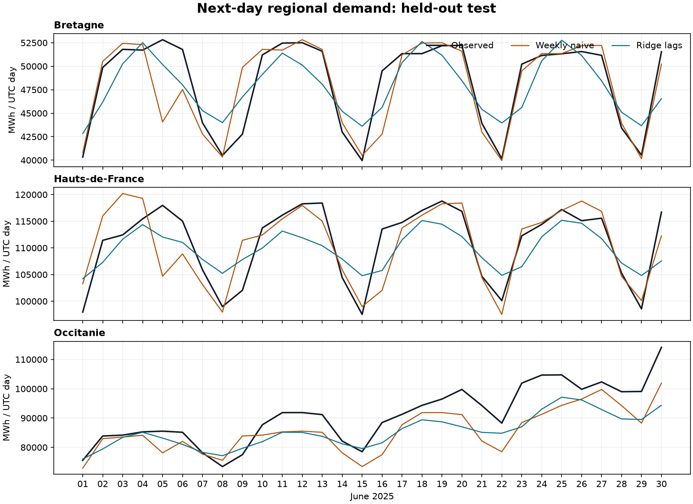

One-day-ahead electricity demand for Bretagne, Hauts-de-France and Occitanie. Evaluated on 90 unseen region-days in June 2025.

Features use prior consumption and calendar only. Each test forecast assumes the previous day's actual consumption is available.
| Region | Naive MAE (MWh) | Ridge MAE (MWh) | Ridge WAPE |
|---|---|---|---|
| Bretagne | 1,402 | 2,476 | 5.13% |
| Hauts-de-France | 3,147 | 4,331 | 3.91% |
| Occitanie | 5,979 | 6,089 | 6.69% |
| UTC date | Region | Actual (MWh) | Forecast (MWh) | Absolute error (MWh) |
|---|---|---|---|---|
| 2025-06-30 | Occitanie | 114,122 | 94,362 | 19,759 |
| 2025-06-23 | Occitanie | 101,922 | 87,010 | 14,912 |
| 2025-06-20 | Occitanie | 99,759 | 87,013 | 12,746 |
| 2025-06-24 | Occitanie | 104,660 | 93,013 | 11,647 |
| 2025-06-29 | Occitanie | 99,064 | 89,509 | 9,555 |
| 2025-06-27 | Occitanie | 102,328 | 92,906 | 9,421 |
| 2025-06-28 | Occitanie | 98,984 | 89,705 | 9,279 |
| 2025-06-30 | Hauts-de-France | 116,708 | 107,551 | 9,157 |
| 2025-06-21 | Occitanie | 94,258 | 85,117 | 9,141 |
| 2025-06-13 | Hauts-de-France | 118,416 | 110,417 | 7,999 |
These are diagnostic cases, not a filtered evaluation sample.
RTE / ODRÉ éCO2mix regional consolidated and definitive observations, January–June 2025. Licence Ouverte 2.0. Source: official dataset.
Training: through April 30; Ridge regularization selected by May MAE; refit through May 31; June held out. Daily UTC totals approximate MWh from 30-minute MW values. The result is a retrospective one-day-ahead backtest, not an operational live forecast.